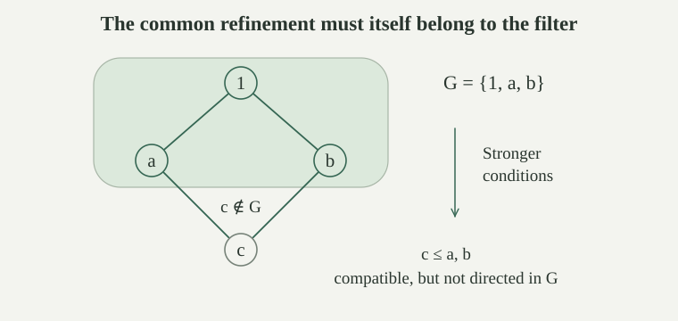

A forcing order is a set \(P\) with a partial order \(\le\) and a greatest element \(1_P\). Its elements are conditions; \(q\le p\) means that \(q\) is stronger than \(p\). The condition \(1_P\) imposes no restriction. We write \(P\) for the ordered structure when its order and greatest element are understood.
Conditions \(p,q\) are compatible, written \(p\mathrel{\parallel}q\), if some \(r\in P\) satisfies \(r\le p,q\). Otherwise they are incompatible, written \(p\perp q\). Comparable conditions are compatible: the stronger one is a common refinement. The converse need not hold. A forcing antichain is a subset whose distinct members are incompatible; this is stronger than merely being an order antichain.
A filter on \(P\) is a nonempty subset \(G\subseteq P\) which is upward closed towards weaker conditions and directed towards stronger ones:
In particular \(1_P\in G\). The common refinement must itself belong to \(G\). This is the order version of finite-intersection closure for filters of subsets: when conditions are nonempty sets ordered by inclusion, a common stronger condition lies inside the intersection.
Let \(P=\{1,a,b,c\}\) have exactly the comparisons generated by \(c\le a\le1\) and \(c\le b\le1\). Is \(G=\{1,a,b\}\) a filter?
No. It is nonempty and upward closed, and any two of its members are compatible in \(P\). In particular \(c\) refines both \(a\) and \(b\). But \(c\) is their only common refinement and is not in \(G\), so directedness inside \(G\) fails. Also \(a,b\) are incomparable but compatible. This one order separates all three notions.

A subset \(D\subseteq P\) is dense if every condition has a stronger member in \(D\). It is dense below \(p\) if this holds for every condition already below \(p\). A subset \(U\) is open in the forcing order if every refinement of a member remains a member. Thus
Dense means dense below \(1_P\). This differs from having a point between two points of a dense linear order: here every condition must admit a refinement satisfying the requirement. For any \(D\subseteq P\), its downward closure is \(D^\downarrow=\{q\in P:\exists d\in D,\ q\le d\}\). If \(D\) is dense, then \(D^\downarrow\) is dense and open. Indeed a witness in \(D\) is already in \(D^\downarrow\), and transitivity preserves the defining refinement.
A filter is generic for a family \(\mathcal D\) of dense subsets if it meets every member of \(\mathcal D\). This requires meeting each set separately, not finding a condition in their intersection.
Let \(P\) be a nonempty countable forcing order, let \((D_n)_{n\in\omega}\) be dense subsets, and let \(p\in P\). There is a filter \(G\) containing \(p\) which meets every \(D_n\).
Fix a surjection \(e:\omega\to P\). Start with \(p_0=p\). Given \(p_n\), density supplies an index \(k\) with \(e(k)\in D_n\) and \(e(k)\le p_n\); take the least such index and put \(p_{n+1}=e(k)\). This recursion specifies the whole descending sequence without making an unspecified choice at every stage. Define
It contains \(p_0=p\) and is upward closed by transitivity. If \(q,r\in G\), choose witnessing indices \(i,j\). The condition \(p_{\max(i,j)}\) belongs to \(G\) and refines both \(q\) and \(r\), proving directedness. Finally \(p_{n+1}\in G\cap D_n\). Thus this particular upward closure is the required filter.
For the remaining model-theoretic assertions, work in ambient ZFC. A ground model here is a set \(M\) which is externally countable, transitive, and satisfies ZFC with actual membership, using the membership-model convention. Fix \(P,\le,1_P\in M\) which \(M\) regards as a forcing order. Transitivity puts every condition in \(M\). The order axioms and compatibility use only quantifiers over the supplied sets, so they hold externally as well.
A filter \(G\subseteq P\) is \(M\)-generic if it meets every \(D\in M\) which is a dense subset of \(P\). Neither \(G\in M\) nor \(G\subseteq M\) expresses this condition: the latter holds automatically because \(P\subseteq M\), while membership of the whole filter is a different question.
The existence of this ground model is a hypothesis. Consistency alone does not provide the asserted transitive model. External countability concerns an enumeration available in the ambient universe, not necessarily an enumeration belonging to \(M\).
For \(D\in M\), the statement that \(D\subseteq P\) is dense has the same meaning in \(M\) and externally. The analogous assertion holds for density below any \(p\in P\).
The subset assertion is bounded. Density is the assertion
After expanding ordered-pair notation by its bounded set-theoretic test, this is a bounded formula with parameters \(P,D,\le\). The bounded absoluteness theorem applies to the transitive domain \(M\). Inserting the additional bounded test \(q\le p\) gives the density-below assertion. In particular, the genericity definition agrees with the ground model's own tests of its dense sets.
For every \(p\in P\), there is an \(M\)-generic filter \(G\subseteq P\) containing \(p\).
The family \(\mathcal D=\{D\in M:D\subseteq P\text{ is dense}\}\) is externally countable, being a subset of \(M\). It is nonempty: \(P\in\mathcal D\). Enumerate it as a sequence \((D_n)_{n\in\omega}\), repeating members if it is finite. Also \(P\subseteq M\) is externally countable and nonempty. Apply , using to interpret each density requirement. The resulting filter meets exactly the family required by \(M\)-genericity.
The enumeration and descending sequence are external constructions. This proof does not assert that \(M\) can collect all its dense subsets into a countable list.
Generic filters through specified conditions also make semantic forcing nonvacuous; they supply the counterextension used in its definability comparison.
A forcing antichain \(A\subseteq P\) is maximal if it is not properly contained in another forcing antichain. Equivalently every condition is compatible with some member of \(A\): a condition incompatible with all of \(A\) could be added, and a condition compatible with one of its members cannot be added as a new member.
For a filter \(G\subseteq P\), the following are equivalent: \(G\) is \(M\)-generic; \(G\) meets every dense open subset in \(M\); \(G\) meets every maximal forcing antichain in \(M\). Maximality here agrees internally and externally, since its compatibility characterization has only bounded quantifiers over \(P,A,\le\).
Genericity immediately implies the open-dense test. Conversely, for dense \(D\in M\), its downward closure \(D^\downarrow\) belongs to \(M\) by Separation and is dense open. If \(q\in G\cap D^\downarrow\), some \(d\in D\) has \(q\le d\). Upward closure puts \(d\) in \(G\), so \(G\) meets \(D\).
If \(A\in M\) is maximal, \(A^\downarrow\) is dense: for a condition \(p\), choose \(a\in A\) compatible with \(p\) and a common refinement \(r\le p,a\). It is also open and belongs to \(M\). Meeting it yields a member of \(G\cap A\) by upward closure.
For the converse antichain test, let \(D\in M\) be dense. Inside \(M\), apply Zorn's lemma to the forcing antichains contained in \(D\), ordered by inclusion. The union of a chain is an antichain, since any two members occur together in a larger member of the chain. The empty antichain starts the construction. Obtain an antichain \(A\subseteq D\) maximal among antichains in \(D\). It is maximal in \(P\): if \(p\) were incompatible with every \(a\in A\), take \(d\in D\) below \(p\); then \(d\) would also be incompatible with every \(a\in A\) and could be added. Thus \(A\in M\) is a maximal antichain of \(P\), and meeting it meets \(D\). This argument uses Choice inside the assumed ZFC-model.
If \(G\) is \(M\)-generic, \(p\in G\), and \(D\in M\) is dense below \(p\), then \(G\cap D\ne\varnothing\).
The set \(E=D\cup\{q\in P:q\perp p\}\) belongs to \(M\) by Separation and is dense. Indeed a condition incompatible with \(p\) is already in \(E\); otherwise take a common refinement with \(p\), and then refine it into \(D\). Pick \(q\in G\cap E\). It cannot be incompatible with \(p\), because directedness inside \(G\) provides a common refinement. Therefore \(q\in D\), as required.
A forcing order is atomless if below every condition there are two incompatible conditions. If \(P\) is atomless and \(G\) is \(M\)-generic, then \(G\notin M\).
Suppose \(G\in M\). Then \(D=P\setminus G\in M\). This set is dense: if \(p\notin G\), take \(p\) itself. If \(p\in G\), choose incompatible \(q,r\le p\). They cannot both belong to \(G\), since directedness would supply a common refinement. At least one is therefore a refinement of \(p\) in \(D\).
By genericity \(G\) must meet \(D\), contradicting its definition. Hence \(G\notin M\). The conclusion concerns the filter as a single set; all of its individual conditions still lie in \(M\).
Although the whole generic filter is absent from \(M\), its canonical name belongs to \(M\) and evaluates to \(G\) in the extension.
The Cohen order \(P_{\mathrm C}\) consists of all finite partial functions from \(\omega\) to \(2=\{0,1\}\), ordered by reverse inclusion:
A condition specifies finitely many bits. The finite-partial-map compatibility criterion says that two conditions are compatible exactly when they agree on their common domain: then their union is a common stronger condition. Conversely a common extending function forces agreement on the overlap. Choosing a fresh coordinate and assigning it respectively \(0\) and \(1\) gives incompatible extensions of any condition, so this order is atomless.
First, \(M\) has the actual natural numbers: \(\omega^M=\omega\). To see this, characterize \(\omega\) as the unique nonzero limit ordinal \(\alpha\) whose members are all zero or successor ordinals. This characterization is bounded: ordinalhood has the bounded ordinal test; being a nonzero limit says that \(\alpha\ne\varnothing\) and every member of \(\alpha\) has a larger member there; being a successor says \(\beta=\gamma\cup\{\gamma\}\) for some \(\gamma\in\beta\), using bounded set tests. Uniqueness holds externally because no positive finite ordinal is a limit, whereas every ordinal larger than \(\omega\) contains the nonzero limit ordinal \(\omega\) as a member. The internal \(\omega^M\) satisfies this same bounded characterization, hence satisfies it externally by transitivity and absoluteness. Therefore it equals \(\omega\).
If \(M\) is as above, its internal Cohen order is this same set \(P_{\mathrm C}\). Every externally finite map of this kind belongs to \(M\): all its finitely many natural-number coordinates and binary values belong to \(M\), and Pairing and Union build its finite graph there. Conversely internal finiteness is witnessed by an internal finite ordinal, which is an actual finite ordinal in a transitive ZFC-model. Functionhood and the specified coordinate and value bounds are absolute. Power Set and Separation in \(M\) collect these maps, so \(P_{\mathrm C}\in M\) and has exactly the asserted members.
Let \(G\) be \(M\)-generic for \(P_{\mathrm C}\). Then \(g=\bigcup G\) is a function \(\omega\to2\), and every \(p\in G\) is a restriction of \(g\).
If two conditions in \(G\) assign values to the same coordinate, a common stronger member of \(G\) extends both, so those values agree. Their union is therefore a partial binary function. For each \(n\in\omega\), the set \(D_n=\{p\in P_{\mathrm C}:n\in\operatorname{dom}(p)\}\) belongs to \(M\), by Separation with the parameter \(n\in M\), and is dense. Extend any condition missing \(n\) by assigning value zero there. Genericity supplies a condition in \(G\cap D_n\), so \(n\in\operatorname{dom}(g)\). This holds for every natural number, proving totality and the restriction assertion.
For an \(M\)-generic Cohen filter \(G\), the sequence \(g=\bigcup G\) is not a member of \(M\). More precisely \(g\ne f\) for every \(f\in M\) which is a function \(\omega\to2\).
For such \(f\), put \(E_f=\{p\in P_{\mathrm C}:\exists n\in\operatorname{dom}(p),\ p(n)\ne f(n)\}\). This set belongs to \(M\) by Separation and is dense. Given \(p\), choose \(n\notin\operatorname{dom}(p)\), possible since the domain is finite, and extend \(p\) by the bit \(1-f(n)\). This extension lies in \(E_f\).
Choose \(p\in G\cap E_f\) and a disagreement coordinate \(n\). Since \(p\subseteq g\), we have \(g(n)=p(n)\ne f(n)\). Thus \(g\ne f\) for every old binary sequence. If \(g\in M\), its absolute function and domain tests would make it one of these \(f\), contradicting this conclusion. Therefore \(g\notin M\).
The ground model says that its set \(R=(2^\omega)^M\) of binary sequences is uncountable. Yet \(R\subseteq M\) is externally countable. Which assertion fails, and can an \(M\)-generic Cohen filter meet every dense subset of \(P_{\mathrm C}\) from the ambient universe?
Neither countability assertion fails. The external enumeration of \(R\) does not belong to \(M\): if it did, its absolute function tests would make it an enumeration inside \(M\), contrary to the internal uncountability theorem. This is the same internal and external countability distinction that occurs for countable membership models. The construction of \(g\) is external, and the dense disagreement requirement \(E_f\) is included for every \(f\in R\).
No filter \(G\) on this atomless order meets every ambient dense subset. For any such filter the proof of shows that \(P_{\mathrm C}\setminus G\) is dense and disjoint from \(G\). Relative genericity asks only for dense sets in \(M\), allowing the new filter to avoid this obstruction because the whole filter is absent from \(M\).